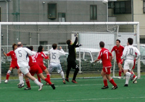
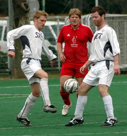
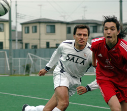

|
Hachioji Park, Saturday 31st March, Sala’s unbeaten run, stretching like Arakawa Shizuka right back to the first game of the season, finally came to an end in Saitama on Saturday as a Kirk inspired Swiss cleaned up 3-0.
The result leaves the top of the table even less clear than before, although BFC’s random thrashing of YCAC puts them in the driving seat. Sala now slip one point behind Swiss and with a crunch game against the Hibs coming right up, are perhaps, to extend the metaphor, in the middle of the back seat wearing the instant death inducing lap belt.
 Without meaning to cause offence, the Swiss are like the annoying distant cousin of the TML. You only meet them a couple of times a year, they’re not all that exciting and they always seem to be doing better than you.
For the first time that I can remember though, Sala went into this one above their red counterparts in the league standings, and with a lot more confidence than usual.
Swiss and Sala have shared three points and two goals over the last two seasons so it was always going to be tight. Thus when Sala found themselves two goals down inside twenty minutes it was something of a shock to the system.
Going forward at least in the first half, Sala were the better footballing side, but mistakes at the back let Swiss run away with it.
The first came after about ten minutes when a Swiss mifielder had far too long to play a ball into the back post. It was headed back into the danger zone and poorly cleared. Karl slammed a shot in that Sid did well to block, but the rebound fell to Kai Adur who smashed it into the top corner. 1v0. Whiffed clearances were to be the order of the day for Sala who time and time again put themselves into trouble by failing to hump it clear at appropriate moments (Every time you can if you ask me, but then I’m a lazy striker so go figure)

The second came from Kirk, who was by far the best player on display. A corner from the left was floated in and the Swiss talisman rocketed a header past Sid into the same corner as the first goal. 2v0.
Sala were playing some lovely one touch stuff going forward, particularly when Giles came deep to set up attacks, but rarely threatened.
Kirk had already cracked a volley off the bar before he made it two, and he continued to confound Sala with his knockdowns. Swiss just seemed to pick up every loose ball in Sala’s half and the sense that it was going to be one of those days was heightened when Shige missed a one-on-one with the keeper. I would usually put my house on Shigeru scoring from there, but he sclaffed his shot well wide of the left hand post. Omens…Dark Omens…
The second half saw Sala play considerably less football, and the game all became very messy. Dhugal’s pass/shot across goal should have been converted but Shigeru arrived just too late. Toby also had a great header cleared off the line.
Sala’s back line did look slightly more resolute, with the return of the dangerous, one-balled, Scottish captain Wee Jock McGeisler, fresh from his community service stint, but it wasn’t enough.
The Swiss added to their lead with a well placed shot from the edge of the box and if Sala’s defence looked simply all over the shop, it was no more than a hyaku en store. 3v0.

That was game over, and despite Shigeru missing another one-on-one and then the rebound in the last few minutes, that was how it finished.
Full credit to Swiss though who came with a gameplan and stuck to it. They were worth the victory, yet I’m sure they would agree that 3v0 was a bit flattering. A good natured if disappointing game drew to a close.
Once again Sala failed to put chances away and the ‘goals for’ column is starting to look a little unsatisfying compared to the other top five teams. Indeed scoring only four goals in their last four TML games is not the way to win the league.
But it shouldn’t be all doom and gloom. On another day the result could have been much closer and it is after all, only the second defeat of an otherwise excellent season up until now.
Call out the carpenters though, because Sala need to make sure that the wheels on this wagon don’t come off.
Report by Lethargao
|